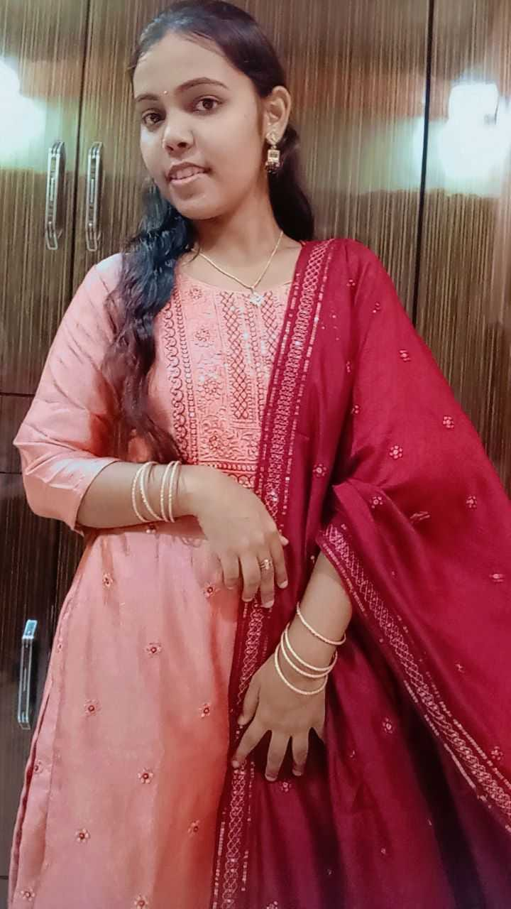

👋 Hello, my name is Neha Prajapati
I’m |
💻 Web Developer Enthusiast | 🎨 UI/UX Designer in Progress
🎓 3rd Year B.Sc IT Student at
Pillai College of Arts, Commerce & Science (Autonomous), Mumbai University
🎯 Specializing in designing intuitive and engaging user experiences
using modern web technologies and design tools like Figma.
💡 I enjoy transforming ideas into digital reality —
from sketching wireframes to building fully functional websites.
🚀 My goal: to become a UI/UX Designer & Creative Frontend Developer,
shaping products that make everyday life easier and more delightful.
✨ Fun side of me: I love writing, sketching, painting, crafting, calligraphy,
and occasionally performing drama 🎭 — creativity is my fuel!
View Resume
